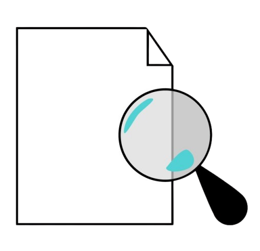
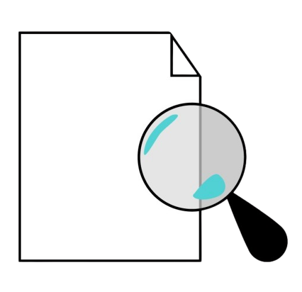
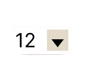
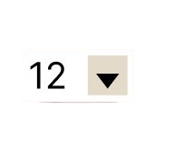
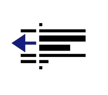
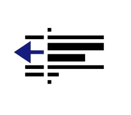

About - Microsoft Word
File
Edit
View
Insert
Format
Tools
Table
Help


 



 

B
I
U


 



Frozen Lake Environment and Cartpole
What is reinforcement learning and how to use it to solve the Frozen Lake and Cartpole problems?
Frozen Lake
Frozen Lake is a simple environment composed of tiles, where the AI has to move from an initial tile to a goal. Tiles can be a safe frozen lake ‚úÖ, or a hole ‚ùå that gets you stuck forever. The AI, or agent, has 4 possible actions: go ‚óÄÔ∏èLEFT, üîΩDOWN, ‚ñ∂Ô∏èRIGHT, or üîºUP.
Cartpole
The cartpole problem is an inverted pendulum problem where a stick is balanced upright on a cart. The cart can be moved left or right and the goal is to keep the stick from falling over. A positive reward of +1 is received for every time step that the stick is upright.
Tabular Learning
Tubular learning is a subfield of AI and semi-supervised learning. It learns to act in an environment to minimize the optimal cumulative reward. It uses an agent and environment to interact with each other via episodes. The agent has no control over the environment and is in state St, meaning it can be in multiple states. The agent has a reward. It needs to choose an action that is taken as an input and it moves the agent according to the action.
- Every time the agent takes a step a percept is created.
- All the things an agent does are collected in an episode
- An episode is a collection of percepts (what it did, what it will do next, rewards, etc.)
- The episode ends when the agent gets to an end. The environment will be reset and the agent will start learning again.
Markov Decision Precess
The Markov decision process is a math model of the environment where the agent has to think of the environment mathematically to learn how to behave. It represents a collection of states, every state having a number of actions.
A table is created that stores the state and the action that has a reward (R is a reward for r(s, a)). s is the state and a is the action used.
A transition model is a probability distribution, meaning that there are chances that you will end up in a state, given the current state and an action (all probabilities for all combinations)
P(s’ | s, a)
- policy is a collection of actions (what actions to take in a certain state)
- non-deterministic = if you want to go up there’s an 80% chance that you will go up
and 10% chance that you will go right and a 10% chance that you will go left
The random policy (π)* means that the agent has an uniform distribution of chances for each direction (25%), and there will be a reward only at the end.
π(a|s)
The optimal policy (π*)* means that the agent has to learn the most optimal action by using reinforcement learning. This is implemented by walking around and keeping track of some values using algorithms.
π*(a|s)
For every episode/step(s) the table is going to be updated.
Agent
The inputs *St*, *Rt*, and the output *At* are random variables. At every timestamp, a new random variable is decided by the distribution.
An agent can select an action according to a π() and appears in *A*, and the rewards are determined by faith.
The agent has no knowledge of the environment and needs to learn the underlying mechanics of the environment by experimenting. It refines the π to π* through interacting with the env.
A percept is what the agent perceives and is one SARS’.
A percept (Ot) contains:
- current state
- chosen action
- reward
- next state
- done
An episode has a series of percepts. For each percept a return *Gt* is calculated. This *Gt* represents the discounted sum of rewards from *step t* in Episode starting from *time t*.
return = next reward + γ + next reward
The *v-value* specifies what the total reward value should be for a particular state. The higher the better.
Agent Algorithm
The agent needs to know how to learn (what learning strategy it should choose). It also keeps track of a counter and as long as it’s not done creating episodes it will try a new Episode object. The episode stores the percept and does the cumulative returns (container for the percepts).
It asks the container the location of the agent by using an input (state) and the environment tells the agent where it is. Then, it checks if the episode is done and asks the strategy what the agent should do. The agent receives the action and gives it to an input.
The strategy learns from an episode or percept and it updates the state.
Tabular methods
The optimal policy can be done using tables.
- if they need neural networks → approximative methods
- Q-Learning, N-Step Q-Learning, and Monte Carlo are temporal difference learning. They work for smaller problems with a limited number of states.
The policy iteration is what makes the agent learn. The agent keeps track of the π policy.
The q-table is the v-table with more precision. The v-table updates the policy.
- The agent starts with a random set of tables and every state has uniform distribution.
Policy Evaluation
Policy evaluation is the mathematical way to drive the π into a V (state value table). The agent has a policy that it keeps track of. We derive the π using Bellmans’s equation. π loops over the state and computes its V value from the policy table.
V(s)=maxa(R(s,a)+ γV(s’))
γ is the discount factor. This represents how much you discount a future reward. It takes into account that future rewards are not as big as they are right now.
- state-action values = Qπ(s, a)
- Q-values are more specific (computes a value for all the states you can be in)
- V-values are associated with the entire square (how valuable it is)
- all squares have their Q-table (16x4 for higher resolution)
The v-value of a state is the average discounted sum of rewards from along the episode. It determines the quality of the path.
For all the states S calculates the utility value using the value function Vπ(s).
Approximate methods
They handle problems with more states than tabular learning. It uses function approximators (neural networks) and is suitable for continuous spaces.
Cartpole Environment
- has a continuous state space
- two discrete states(right or left)
- all observations are assigned a uniformly random value
- the episode ends when:
- pole angle >= +12 degrees
- cart position >= +-2.4 degrees (reaches the end of the display)
- episode length >= 500
- reward for every timestamp
- solved when the pole can be held upright
There is a reward for every timestamp, and it’s solved when the pole can be held upright without violating one of the termination conditions for at least 195 steps.
Policy Iteration
For more complex problems with many states, use a policy function that can generalize over stats when determining Q or V values. Neural networks are trained with more examples by generalizing unseen states.
π = neural network
- to make the q-value equation optimal take the maximum q-value
- use an expectation *E* to derive Q*(s, a)
- there are infinite states possible
The q-network is a function that you train. It minimizes the loss *L* using gradient descent. It steers the NN in the right direction. The equation can be used to create the training set for the NN.
Policy
Neural Networks are functions that generalize well-overseen examples. They are trained using seen examples and they can predict unseen ones.
- The policy is the neural network.
- The prediction step is equal to the Policy Evaluation.
The current policy is defined by weights in a neural network, by learning the weight it also learns the policy.
- The NN tries to minimize the error by updating the data. The NN has control only over the weights which tunes its output.
Learning the Q-values
- yt = target at time t
- y^t = prediction of the NN at time t
The target is the bait used to act. The NN uses the previous version of itself to better predict the output.
yt = Es’[r + γ max q(s’, a’; Ot-1)]
- y^t prediction = output of the NN using the current weights.
Updating the weights can be computing the gradient ▼L(Ot) of the L(Ot).
Use two q-networks:
- advantage of putting quality values of s, a
- the second network will help build training sets for the first one
- each network has its weights
- every C step will copy the weight O1
- they reduce the variance in the output through a smoothing effect
Replay memory is a collection of percepts that the agent has seen. Append percepts to replay memory in Learning Strategy.
Policy improvement
If a random number is smaller than ℇ, then explore by sampling a random action from the environment, otherwise give the best prediction.
- Don’t render every timestep (maybe every 1000 E).
Features
OpenAI Gym: a Pythonic API that provides simulated training environments to train and test reinforcement learning agents.
Git code
Source to the GitHub code: https://github.com/alecsiuh/reinforcement-learning.git
Draw ▾


AutoShapes ▾


Page 1
Sec 1
1/1
At 1"
Ln 1
Col 1
REC
TRK
EXT